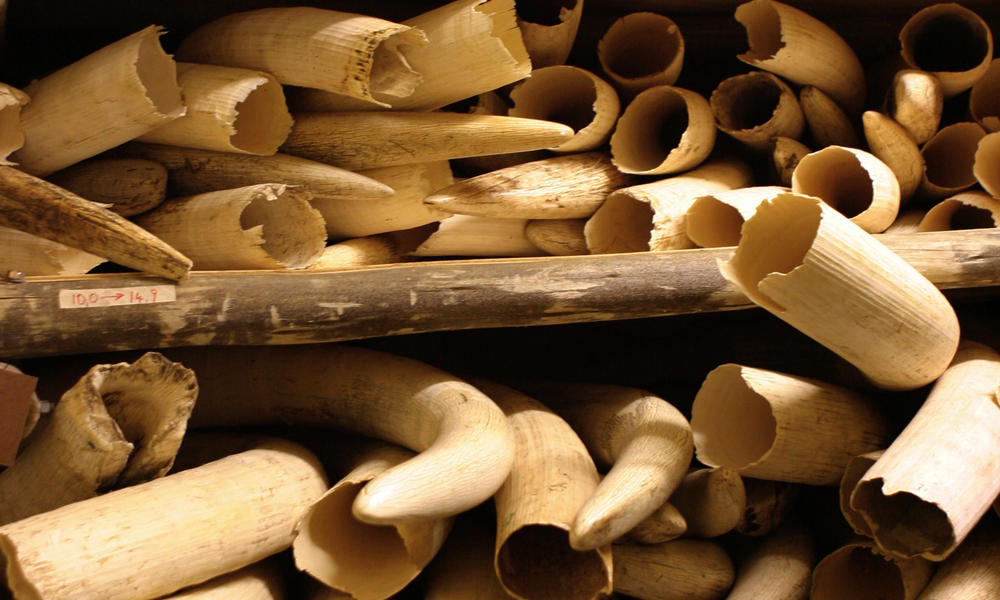

THREATS

RETALIATORY KILLINGS
Today, the most urgent threat to elephants is large-scale poaching to supply the illegal ivory trade. Other threats facing elephants in Africa and Asia include conflict with humans and habitat loss and degradation.
WWF advocates an end to commercial elephant ivory sales in the US and other major markets like China, Thailand and Hong Kong as the most effective and efficient solution to end this illegal ivory trade.
ILLEGAL WILDLIFE TRADE
In 1989, the Convention on International Trade in Endangered Species of Wild Fauna and Flora (CITES) banned the international trade in ivory. However, there are still some thriving but unregulated domestic ivory markets in a number of countries, which fuel an illegal international trade. Poaching to meet growing demand from affluent Asian countries is driving up the rate of poaching. In some countries, political unrest contributes to elephant poaching.